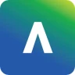

Blackboard UPC · Acceso anticipado
Tu campus, en el chat que ya usas.
Consulta cursos, tareas, notas y anuncios desde ChatGPT o Claude.Cursos, tareas y notas desde ChatGPT o Claude.
Conexión privada y revocable. Campus es un proyecto independiente.
01 · Pregunta desde
ChatGPT
Claude
02 · Consulta en

Blackboard UPCMás instituciones pronto
03 · Vuelve a tu asistente
Tienes 3 entregas pendientes esta semana.
Información consultada en Blackboard UPC
Una conexión. La información que necesitas.
Cursos
Tareas
Notas
Anuncios
Un flujo, sin vueltas
Tu institución entra al chat que ya usas.Conecta y pregunta.
Conectas tu cuenta una vez. Campus ordena el contexto y lo pone a disposición de tu asistente, sin obligarte a aprender otra plataforma.
Paso 1
Acceso cifrado
Ingresa con tu cuenta institucional
La autenticación ocurre en una sesión temporal de tu institución.
01 · Una conexión
Tu campus virtual sigue siendo la fuente.
No compartes tus credenciales con el chat. Tú completas el inicio de sesión y Campus prepara un acceso revocable para consultar tus datos.
02 · Contexto listo
Una pregunta. Una respuesta útil.
Campus encuentra el curso, la fecha y el estado correcto antes de responder. Menos pestañas, menos búsquedas y más claridad para decidir qué hacer.
¿Qué tengo pendiente esta semana?
Campus3 entregas antes del viernes
Arquitectura de Software · Finanzas · IoT
Respuesta basada en tu BlackboardActualizado ahora
Diseñado para una cuenta sensible
Acceso cuando lo necesitas. Control cuando tú lo decides.Tu acceso, bajo control.
Sesión separada
Tu cuenta Campus y tu sesión académica no son lo mismo.
Conexión cifrada
El acceso remoto se crea para tu sesión y puede revocarse desde Campus.
Desconexión clara
Cuando desconectas, Campus deja de poder consultar tu campus virtual.
Acceso anticipado · 100 cupos
Dos meses para descubrir una forma más simple de estudiar.Empieza con Campus.
Empieza con Blackboard UPC y usa Campus desde ChatGPT o Claude. Si te sirve, mantienes un precio especial por haber llegado primero.
Para los primeros 100
Oferta pilotoAcceso anticipado
Prueba Campus antes que nadie.
S/20por 2 meses
Incluye:
- Campus en ChatGPT y Claude
- Cursos, tareas, notas y anuncios
- Soporte directo durante el piloto
- Luego S/15 al mes si continúas
Después del piloto
PróximamenteRegular
Para estudiantes que se unan después de los primeros 100.
S/19.90al mes
Incluye:
- Las funciones disponibles de Campus
- Conexión con asistentes compatibles
- Acceso desde computadora o celular
- Cancelación cuando quieras
Todos los accesos incluyen
Conexión cifrada
Acceso revocable
Consultas de solo lectura
Preguntas directas
Antes de conectar.
Lo esencial sobre acceso, compatibilidad y control de tu cuenta.
¿Campus reemplaza el campus virtual de mi institución?
No. Campus es una capa personal para consultar tu información académica desde herramientas que ya usas. El campus virtual de tu institución sigue siendo la fuente de los datos.
¿Qué instituciones funcionan hoy?
El piloto empieza con Blackboard de UPC. Campus está diseñado para sumar institutos, universidades y otros campus virtuales; anunciaremos cada nueva compatibilidad antes de ofrecerla.
¿Puedo dejar de usarlo cuando quiera?
Sí. Puedes desconectar Blackboard y revocar el acceso desde Campus. El piloto no pretende bloquearte en un flujo nuevo.